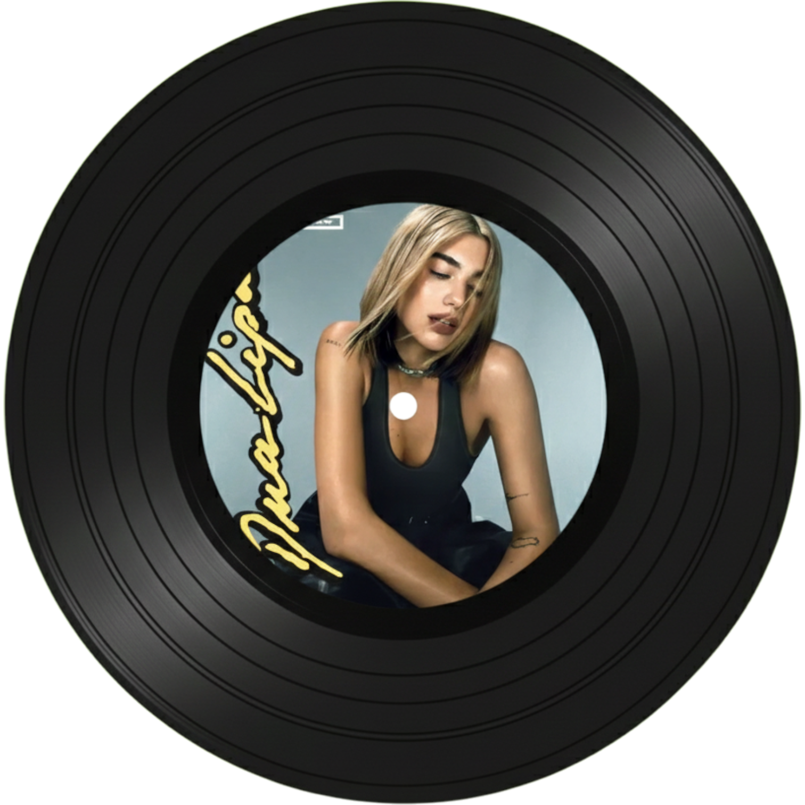
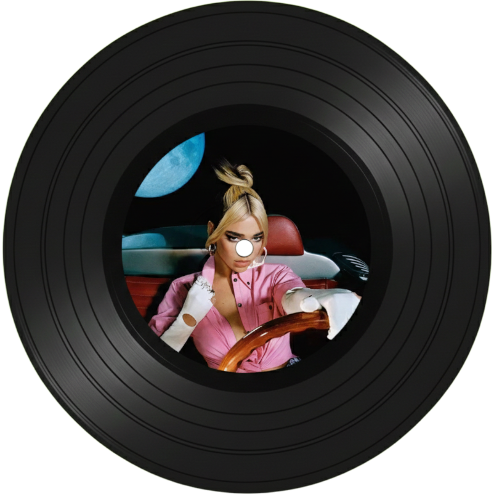
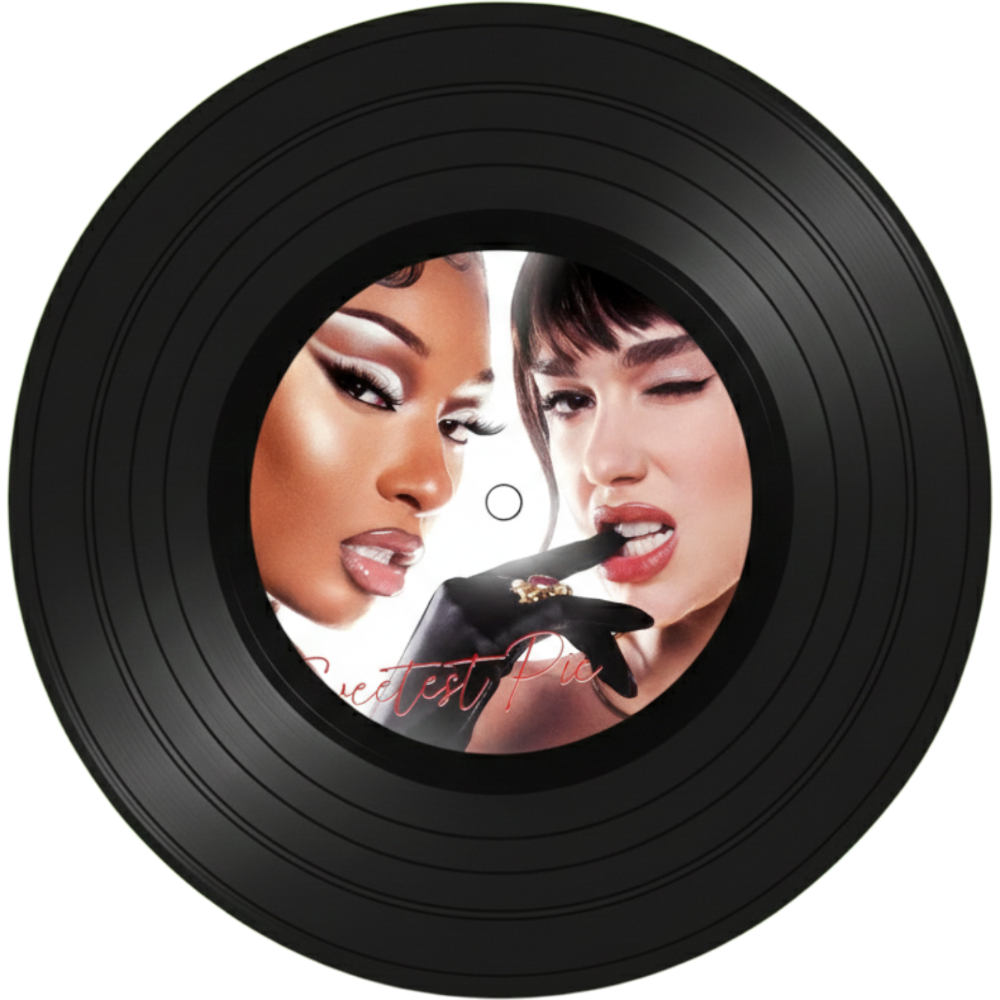

두아 리파 Dua Lipa
이름 : Dua Lipa
출생 : 1995년 8월 22일 (30세)
국적 : 영국/알바니아/코소보 (복수국적)
80년대 디스코와 펑크(Funk)를 현대적인 팝 댄스로 재해석하며 레트로 열풍을 주도하는 글로벌 스타

Levitating (feat. DaBaby)
우주가 생각나는 비트로 몽환적이면서 신나는 디스코 분위기가 조화를 이루는 곡이다.
밤에 드라이브를 하거나 친구들과 춤(챌린지)을 출 때 맞춤노래다.

Don't Start Now
레트로 디스코 열풍을 전 세계적으로 다시 불러일으켰다.
이별 후에 "이제 와서 다시 시작하자고 하지 마!"라고 단호하게 외치는 쿨하고 자신감 넘치는 매력적인 여성을 보여준다.
펑키한 베이스와 반복적인 리듬이 어깨를 들썩이게 만든다.

Good In Bed
싸울 때는 최악이지만, 때로는 너무나 잘 맞는 관계를 솔직하게 이야기한다.
솔직함과 톡톡 튀는 매력 덕분에 편안하게 들으면서도 흥을 놓칠 수 없다.

Sweetest Pie (& Megan Thee Stallion)
팝과 힙합이 완벽하게 조화를 이루는 달콤하고도 강렬한 노래.
스스로를 귀하게 대접해야 한다는 메시지를 담고 있다.
중독성 강한 후렴구와 당당한 애티튜드가 기분을 업 시켜준다.